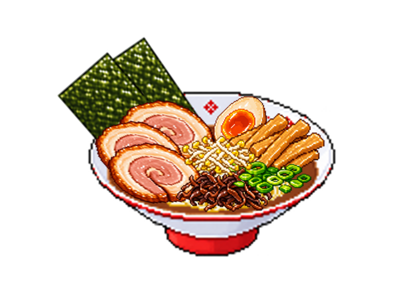
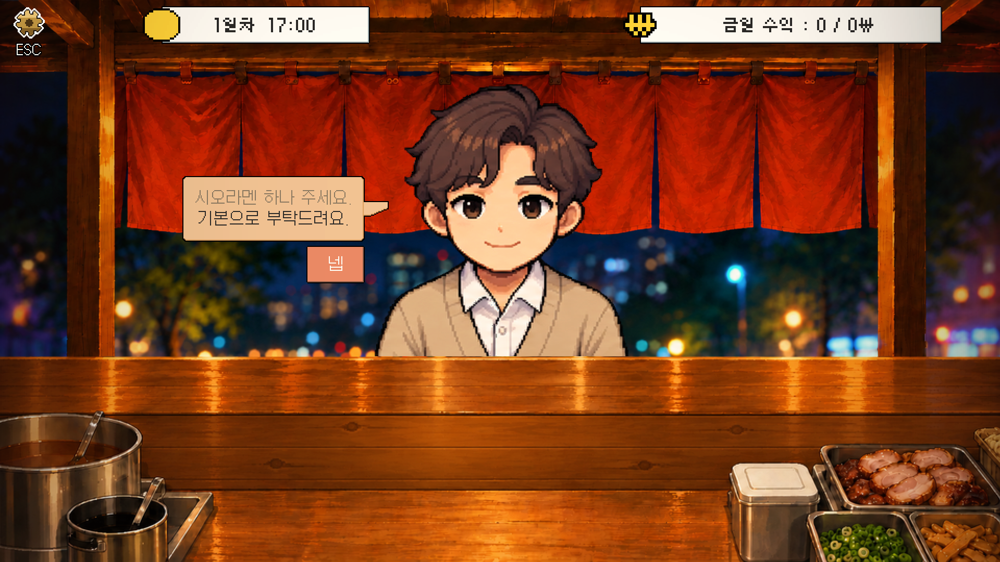
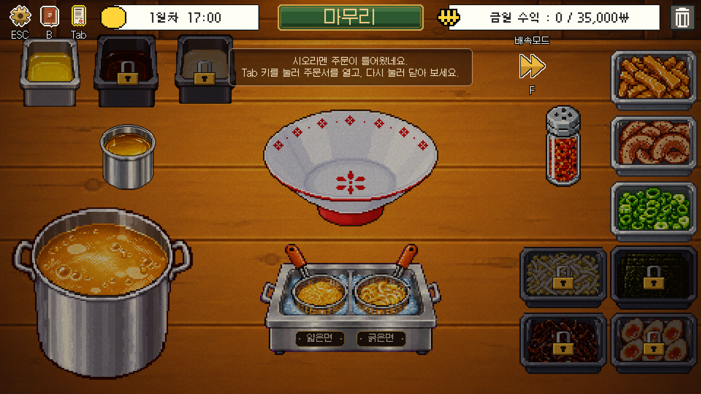
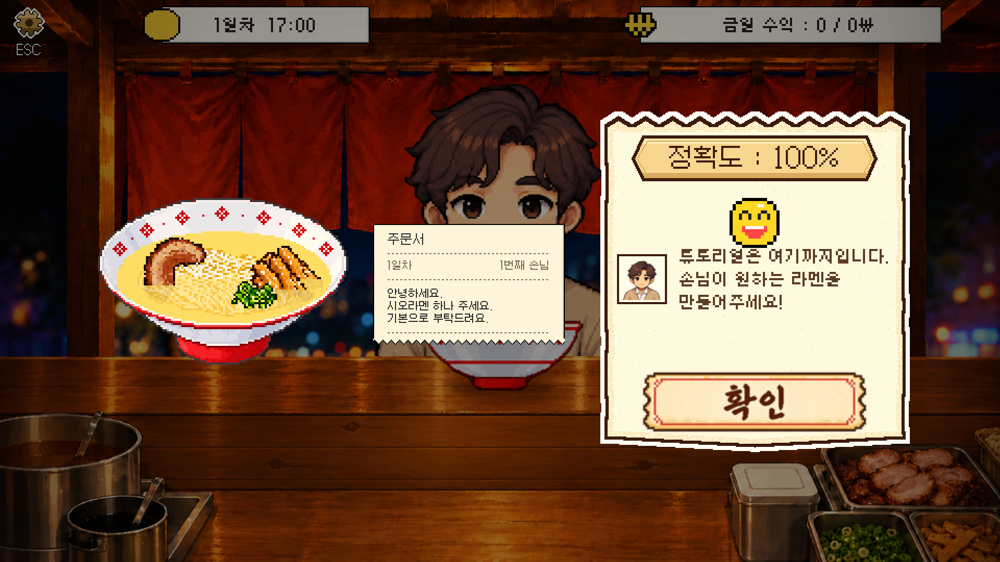
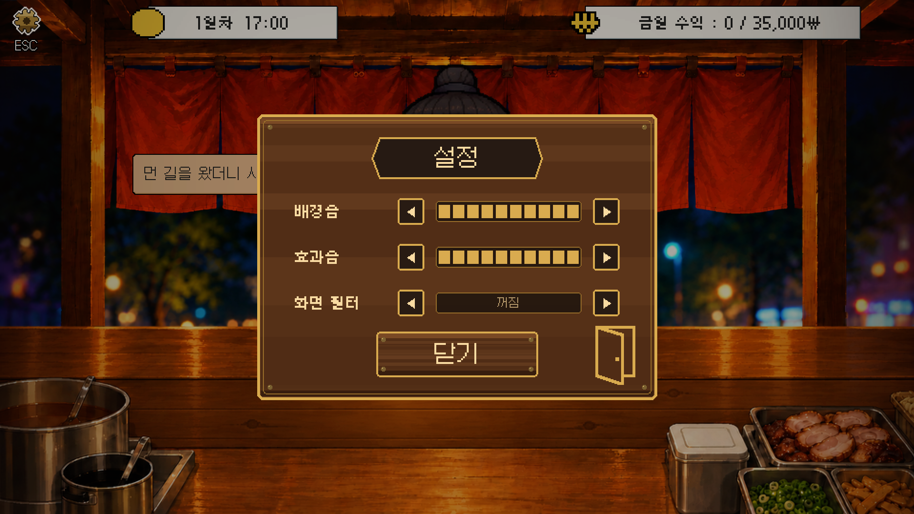
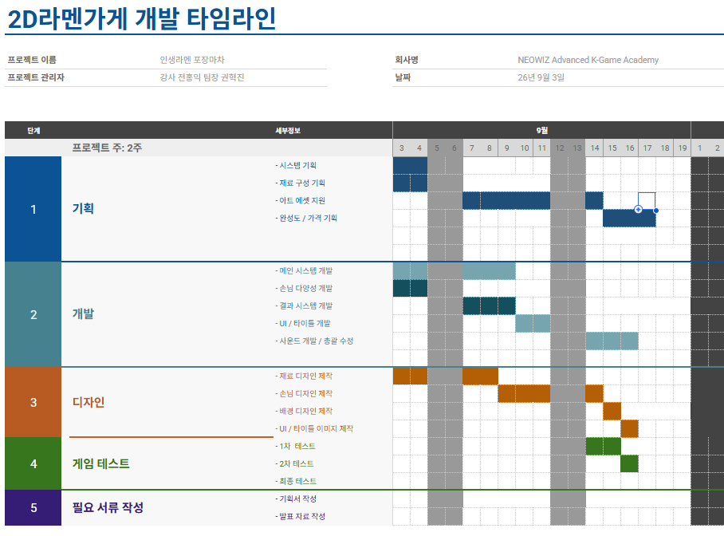

01. 핵심 경험 — 주문을 해석해 한 그릇을 완성
손님의 대화로 요구 사항을 전달하고, 조리 화면에서 재료를 선택한 뒤 완성 결과를 확인하는 흐름입니다. 제공된 주문 화면에는 “시오라멘 하나 주세요. 기본으로 부탁드려요.”라는 요청이 표시됩니다.
손님의 주문을 해석하고, 재료를 조합해 한 그릇의 정답을 완성하는 게임.

손님의 주문을 읽고 필요한 재료를 조합해 라멘을 완성하는 2D 게임입니다. 주문 대화, 조리 튜토리얼, 정확도 피드백, 설정 화면을 제공된 실제 게임 스크린샷과 연결해 소개합니다.
손님의 대화로 요구 사항을 전달하고, 조리 화면에서 재료를 선택한 뒤 완성 결과를 확인하는 흐름입니다. 제공된 주문 화면에는 “시오라멘 하나 주세요. 기본으로 부탁드려요.”라는 요청이 표시됩니다.
주문은 손님 대화로 제시됩니다. 조리 튜토리얼은 Tab 키로 주문서를 열고 다시 닫도록 안내합니다. 플레이어가 기억에만 의존하지 않고 주문 내용을 재확인할 수 있는 인터페이스를 확인할 수 있습니다.
중앙에는 라멘 그릇, 왼쪽에는 타래와 육수, 하단에는 얇은면·굵은면, 오른쪽에는 토핑과 조미료가 배치되어 있습니다. 잠금 아이콘으로 아직 사용할 수 없는 재료를 구분합니다. 실제 투입 조작과 재료별 수량 판정 규칙은 추가 확인이 필요합니다.
제출 후 화면에 완성된 라멘, 해당 주문서와 정확도가 함께 나타납니다. 제공된 튜토리얼 결과 예시는 정확도 100%를 표시합니다. 이는 한 화면의 결과이며 전체 테스트 성과나 보상 공식의 증거로 해석하지 않습니다.
상단 UI에는 영업일과 시각, 금일 수익이 배치되어 있습니다. 조리 화면 예시에는 1일차 17:00, 수익 0 / 35,000이 표시됩니다. 총 5일 진행은 기존 기획 항목 기준이며 일자별 해금표와 목표 수익의 변화는 아직 확인 중입니다.
튜토리얼에는 현재 행동을 설명하는 문구가 조리 화면에 직접 나타납니다. 상단 단축키 아이콘은 ESC·B·Tab을 표시하며, F 배속 모드도 보입니다. 설정 화면에는 배경음·효과음과 화면 전환 항목이 있습니다. 각 기능의 저장 방식과 효과는 화면만으로 확정하지 않습니다.
제공된 개발 타임라인은 기획·개발·디자인·게임 테스트·서류 작성으로 업무를 구분합니다. 사용자 확인에 따라 실제 제작 기간은 2주입니다. 본인은 전체 게임 기획과 아트 리소스 제작, 중간 테스트 및 피드백을 총괄했습니다. 테스트 결과와 변경 전후의 구체적 내용은 추가 정리할 예정입니다.
실제 종료 조건과 날짜 전환 방식은 빌드 확인이 필요합니다.
주문 표현이 요구 수량으로 변환되는 과정을 살펴보세요. 실제 게임 실행 화면이 아닌 설명용 모델입니다.
이 예시는 기본 1, 상한 4를 가정합니다. 이전 대화 요약의 표현 규칙을 시각화했으며 원본 규칙과 대조 전입니다.
실제 포장마차 구조와 기존 게임을 조사하고, 에셋을 조합해 완성될 라멘의 모습을 구상했습니다. 2주 제작 과정에서 전체 기획, 아트 리소스 제작과 테스트·피드백을 총괄했습니다.
실제 포장마차 구조, 조리 장면, 기존 요리 게임의 주문·조리 화면을 조사한 자료입니다. 다른 작품의 화면을 본 프로젝트의 제작 결과로 표시하지 않습니다.
기존 에셋을 합성해 그릇 위에 재료가 모였을 때의 모습을 구상한 예시입니다. 개별 에셋을 모두 직접 그렸다는 의미는 아닙니다.
전체 기획과 아트 리소스 제작, 중간 테스트 및 피드백을 총괄했습니다. 구체적인 개선 사례는 당시 변경 내용 확인 후 추가합니다.

여러 에셋 이미지를 합쳐 완성 라멘의 외형을 구상한 예시입니다. 실제 게임 플레이 캡처 및 개별 에셋의 원화 제작과 구분합니다.
원본 크게 보기 ↗기획·제작 과정 및 담당 범위: 사용자 제공 설명 기준. 참고 이미지의 개별 출처와 에셋 제작 방식은 추가 정리 예정입니다.
기능 설명을 실제 화면과 연결했습니다. 아래 설명은 제공된 스크린샷에서 관찰되는 UI를 정리한 것이며, 당시 설계 의도나 개인 기여를 대신하지 않습니다.

시오라멘 기본 주문을 전달하는 대화창과 확인 버튼입니다. 손님·대화·작업대가 한 화면에 함께 보입니다.
원본 크게 보기 ↗
Tab 키로 주문서를 열고 닫는 튜토리얼 문구가 표시됩니다. 재료 구역, 잠금 아이콘, 면 종류와 배속 단축키도 확인할 수 있습니다.
원본 크게 보기 ↗
튜토리얼 결과 화면은 완성 라멘, 주문서, 정확도 100%와 다음 안내를 함께 표시합니다. 실제 보상 계산식은 이 화면에서 확인되지 않습니다.
원본 크게 보기 ↗
배경음·효과음 조절과 화면 전환 항목, 닫기 버튼이 보입니다. 아이콘의 세부 동작과 설정 저장 여부는 추가 확인이 필요합니다.
원본 크게 보기 ↗| 플레이 순간 | 확인 가능한 정보 | 검토 관점 |
|---|---|---|
| 주문을 받는 순간 | 손님 대화와 확인 버튼 | 요구 사항을 읽고 다음 행동으로 연결할 수 있는가 |
| 조리 중 | Tab 주문서 안내, 재료 구역, 잠금 표시 | 주문 재확인과 재료 탐색이 쉬운가 |
| 제출 후 | 완성 라멘·주문서·정확도 | 맞거나 틀린 이유를 설명할 수 있는가 |
‘검토 관점’은 이번 포트폴리오 정리에서 제안한 분석 질문입니다. 실제 사용자 테스트 결과가 아닙니다.

시스템·재료·완성도/가격 기획, 메인 시스템과 UI 개발, 디자인 제작, 단계별 테스트와 발표 자료가 일정표에 구분되어 있습니다. 실제 제작 기간은 2주로 확인했습니다. 세부 작업별 완료일과 테스트 결과는 이 일정표만으로 확정하지 않습니다.
원본 크게 보기 ↗참고 사진·기존 게임 화면은 실제 포장마차 구조 및 게임 레퍼런스를 조사한 자료입니다. 실제 제작 화면과 구분하며, 개별 출처가 정리되기 전까지 해당 이미지를 공개 갤러리에 재게시하지 않습니다.
정확도와 주문서는 이미 결과 화면에 함께 표시됩니다. 다음 개선 가설은 정확도와 별도로 재료별 “요구 / 투입 / 인정” 수량을 보여주면, 틀린 이유와 정산 규칙을 더 쉽게 이해할 수 있다는 것입니다. 실제 문제가 있었는지는 추가 플레이테스트로 확인해야 합니다.
제공 화면의 정보 구조 확인 → 재료별 비교표 시안 작성 → 기존 화면/제안 화면으로 오답 원인 설명 요청 → 이해 차이 기록
테스트 미실시 · 결과 및 개선 성과 placeholder
Placeholder · 이미지 등록 예정